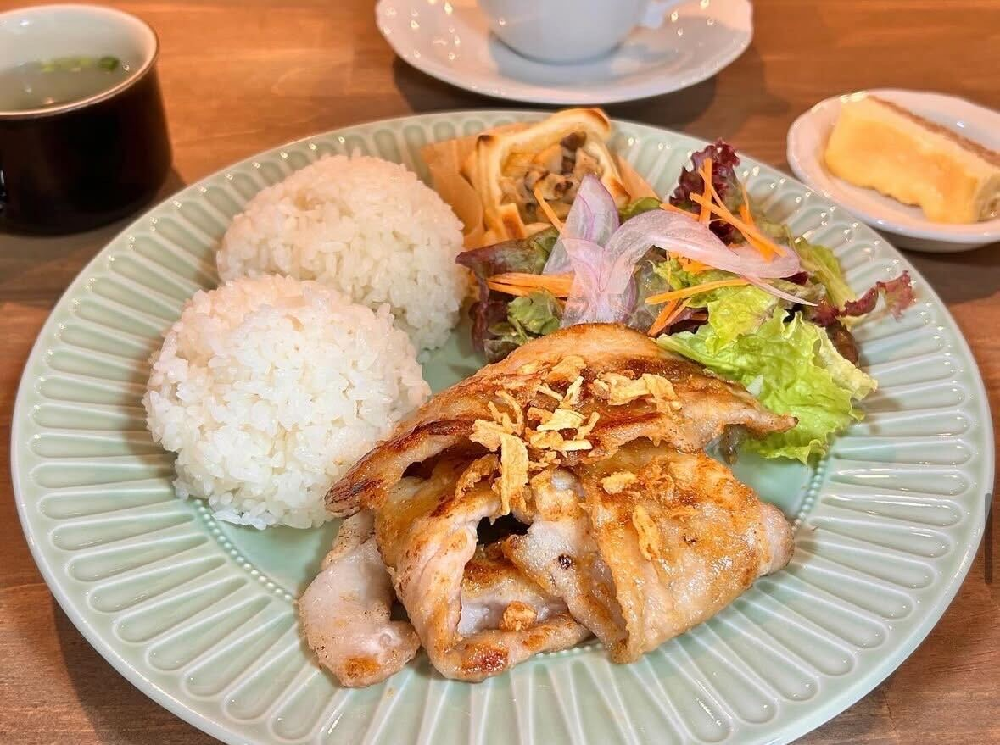
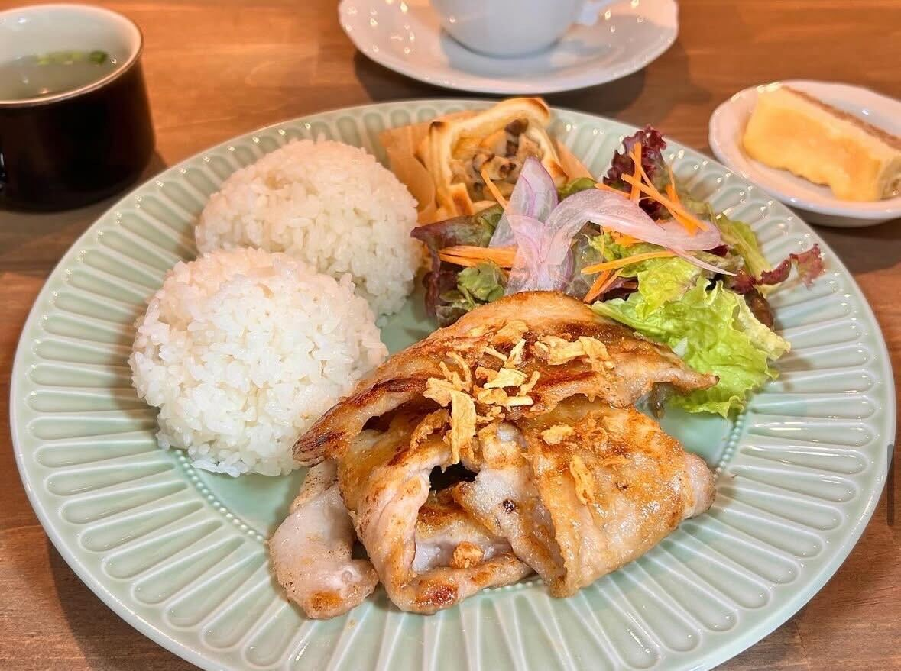

五日市街道沿いに佇む、ランチも楽しめるカフェです。 窓から見える街路樹の景色が四季を感じながらお過ごしいただけます。 WiFi、電源もございます。 ぜひ、ごゆっくりお過ごしください。 元、車のショールームでの隣の武蔵野自動車と関連会社のため、オブジェに車の部品が使われています。
日によってランチ・ケーキ内容が変わりますので、日替わりメニューの中からお選びください。
日替わりメニューの内容は、インスタストーリー・店頭でご確認いただけます。
メイン・ご飯・サラダ・スープのほかにプチスイーツとドリンクも付いております。

 
